Tạo CV online miễn phí với các mẫu CV được thiết kế sẵn chỉ với 3 bước:
- Bước 1: Chọn ngôn ngữ khác / thay đổi tiêu chí gợi ý mẫu CV để TopCV gợi ý các mẫu CV phù hợp với nhu cầu của bạn.
- Bước 2: Chọn mẫu CV miễn phí mà bạn ưng ý nhất và tiến hành viết CV.
- Bước 3: Sau khi hoàn thiện viết CV, bạn tiến hành lưu CV lại tải CV về dưới dạng PDF hoặc sử dụng link CV online để gửi cho nhà tuyển dụng.
Tại sao nên tạo CV online trên TopCV
- Nhiều mẫu CV đẹp, miễn phí, phù hợp nhu cầu ứng tuyển các vị trí khác nhau.
- Tương tác trực quan, dễ dàng chỉnh sửa thông tin, tạo CV online nhanh chóng trong vòng 5 phút.
- Nhận gợi ý cách viết CV phù hợp cùng các mẫu CV tham khảo chi tiết theo ngành nghề.
- Mẫu CV đồng bộ với các mẫu thư xin việc (Cover Letter).
- Các mẫu CV hỗ trợ đa ngôn ngữ: tiếng Anh / Nhật / Việt.
Hướng dẫn cách viết CV
Chúng ta đều biết rằng CV là một phần không thể thiếu trong quá trình xin việc của ứng viên. Vậy chính xác CV là gì? CV gồm những phần nào? Đâu là cách viết CV xin việc chuẩn nhất? Trong bài viết dưới đây TopCV sẽ đem tới những thông tin hữu ích về CV xin việc cũng như những lưu ý cần nắm rõ khi viết CV xin việc.
CV là gì?
CV là viết tắt của "Curriculum Vitae". Về bản chất, CV xin việc không phải là tờ khai lý lịch tự thuật mà là bản tóm tắt những thông tin cơ bản nhất về ứng viên, cũng như trình độ học vấn, kinh nghiệm làm việc, các kỹ năng liên quan tới công việc mà ứng viên muốn ứng tuyển. CV xin việc được coi như “bộ mặt” của ứng viên, để lại ấn tượng ban đầu cho nhà tuyển dụng, vì vậy CV thường được chăm chút kỹ càng từ nội dung tới hình thức.
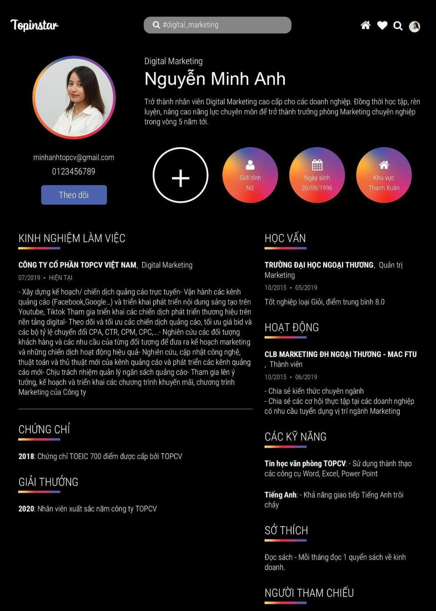
CV đóng vai trò quan trọng trong quá trình xin việc
CV và sơ yếu lý lịch khác nhau chỗ nào?
CV tập trung vào những thông tin liên quan tới việc làm và học vấn. Những thông tin cá nhân nêu ra trong CV đều rất cơ bản, đủ để nhà tuyển dụng biết ứng viên là ai, đã được đào tạo qua những trường lớp nào, đã làm việc tại những cơ quan, doanh nghiệp nào.
Mặt khác, sơ yếu lý lịch lại đi sâu vào thông tin về bản thân ứng viên và từng thành viên trong gia đình ứng viên. Sơ yếu lý lịch thường được yêu cầu lấy dấu công chứng tại địa phương để xác thực thông tin.
CV có những dạng nào?
Khi nộp CV xin việc cho nhà tuyển dụng ứng viên luôn có hai sự lựa chọn, hoặc CV bản cứng hoặc CV bản mềm. Vậy sự khác nhau giữa hai dạng CV này là gì? Khi nào cần sử dụng CV bản cứng và khi nào cần sử dụng CV bản mềm?
CV bản mềm
CV bản mềm/CV online là CV xin việc được thực hiện trên máy tính, có thể trình bày trên công cụ Microsoft Word (sử dụng cả online lẫn offline), trên trang tính Google Document hoặc trên các nền tảng hỗ trợ tạo CV chuẩn như TopCV. Ứng viên tự điền các thông tin cá nhân, học vấn, kinh nghiệm việc làm vào trang và sau đó nhấn lưu. CV bản mềm được sử dụng khi ứng viên ứng tuyển vào các vị trí việc làm được đăng tuyển online, có thể nộp CV cho nhà tuyển dụng trực tiếp hoặc thông qua các nền tảng tuyển dụng khác. Nhà tuyển dụng sẽ nhận và sau đó tiến hành đánh giá CV ngay sau đó. Ngoài ra, đối với một số trường hợp ứng việc được yêu cầu hoặc có nhu cầu phỏng vấn trực tuyến thì CV bản mềm hay CV online cũng sẽ phát huy tối đa công dụng của mình.
-
Ưu điểm CV bản mềm: Tiện dụng, đa dạng về màu sắc và nội dung, dễ dàng sửa chữa.
-
Nhược điểm CV bản mềm: Dễ gặp phải tình trạng lỗi phông chữ trên một số định dạng, không tương thích với một số công cụ gõ văn bản .
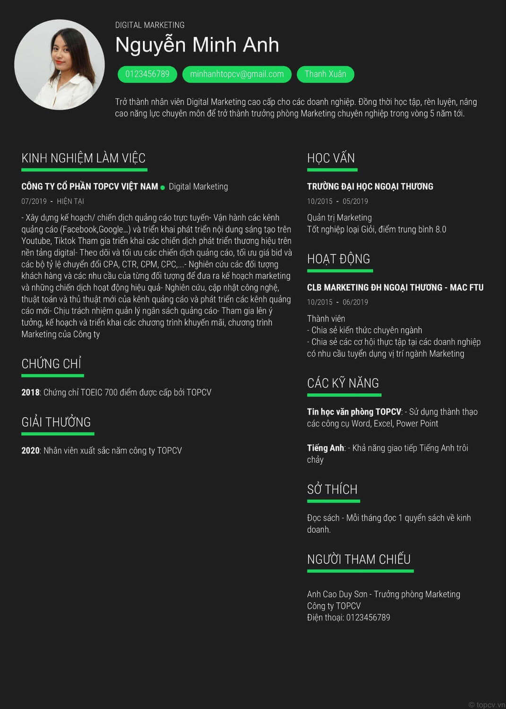
CV bản mềm được sử dụng rộng rãi bởi tính tiện dụng, đa dạng về màu sắc, mẫu mã
CV bản cứng
Sau khi in CV bản mềm ra giấy chúng ta có CV bản cứng. CV xin việc bản cứng thường được được ứng viên mang tới buổi phỏng vấn trực tiếp, ngoài ra, nhà tuyển dụng khi tham gia phỏng vấn cũng rất thường xuyên chuẩn bị sẵn cho mình một CV bản cứng được in từ CV bản mềm ứng viên đã nộp trước đó.
Ứng viên có cần chuẩn bị sẵn CV bản cứng khi tham gia phỏng vấn hay không?
Câu trả lời là có. Ba lý do để nên mang theo CV bản cứng tới buổi phỏng vấn là:
-
Để lại ấn tượng tốt trong mắt nhà tuyển dụng, khiến nhà tuyển dụng cảm thấy đây là một ứng viên cẩn thận, chu đáo.
-
Tham gia buổi phỏng vấn không chỉ có bộ phận nhân sự mà còn có các bộ phận chuyên môn, và không phải tất cả trong số họ đều đã xem qua CV bản mềm của bạn.
-
Rất nhiều nhà tuyển dụng có thói quen ghi lại những điều đáng chú ý ngay trên CV của bạn.
Chính vì vậy khi tham gia phỏng vấn bạn đừng quên in và mang theo CV bản cứng bên mình nhé.

Hãy mang theo CV bản cứng khi tới buổi phỏng vấn nhé
CV gồm những gì?
CV có thể được trình bày dưới nhiều dạng, nhiều ngôn ngữ, nhiều màu sắc, tuy nhiên mấu chốt vẫn là phải đảm bảo các thông tin liên quan tới cá nhân ứng viên, kinh nghiệm việc làm, trình độ học vấn, v.vv.. Bạn càng thể hiện tốt các thông tin trong CV thì càng dễ dàng gây ấn tượng với nhà tuyển dụng. Vậy CV gồm những gì ? Nên trình bày các thông tin ấy như thế nào?
Tiêu đề CV xin việc
Đây là một mục cần thiết khi tạo một CV bản mềm nhưng không phải ứng viên nào cũng chú ý tới. Tiêu đề CV nên để ngắn gọn nhưng vẫn đủ những thông tin cơ bản về ứng viên cũng như vị trí công việc, việc này giúp nhà tuyển dụng dễ dàng tìm thấy hồ sơ của bạn trong số hàng chục, hàng trăm CV nhận được mỗi ngày.
-
Cách viết tiêu đề CV đơn giản mà hiệu quả nhất là: CV - Họ và tên ứng viên - Vị trí đang ứng tuyển
-
Ví dụ: CV - Nguyễn Minh Anh - Nhân viên kinh doanh
Thông tin cá nhân trong CV
Trong mục này hãy nêu ra những thông tin cơ bản nhất, không nên quá sa đà vào câu chữ và viết dài dòng. Nên nhớ, nhà tuyển dụng chỉ quan tâm tới những kinh nghiệm, kiến thức chuyên môn phục vụ cho công việc bạn đang ứng tuyển. Việc viết thông tin cá nhân trong CV quá cầu kỳ sẽ vô tình khiến nhà tuyển dụng “lạc” trong lượng thông tin quá lớn và gặp khó khăn trong việc chọn lọc những thông tin đáng quan tâm.
-
Họ và tên: Sử dụng tên thật, nên viết in hoa tất cả các chữ, đầy đủ dấu câu. Không nên ghi biệt danh vào trong mục này. Nếu muốn giới thiệu về biệt danh của mình bạn có thể chia sẻ với nhà tuyển dụng trong buổi phỏng vấn.
-
Ngày tháng năm sinh: Sử dụng ngày tháng năm sinh trong Thẻ căn cước/Chứng minh nhân dân. Bạn có thể thể ghi theo cấu trúc ngày/tháng/năm hoặc ngày-tháng-năm.
-
Email: Địa chỉ email ngắn gọn và tốt nhất nên chứa tên ứng viên. Nếu bạn đang sử dụng một email chứa những từ ngữ chưa được “chuyên nghiệp” lắm thì hãy nhanh tay đổi cho mình một email mới nhé.
-
Số điện thoại liên lạc.
-
Một số trang web cá nhân: Nơi nhà tuyển dụng có thể kết nối hoặc tìm hiểu thêm thông tin về bạn như Facebook, Instagram, Wordpress, v.vv..
-
Nơi ở hiện tại: Nên ghi đầy đủ từ phường/xã, quận/huyện, tỉnh/thành phố.
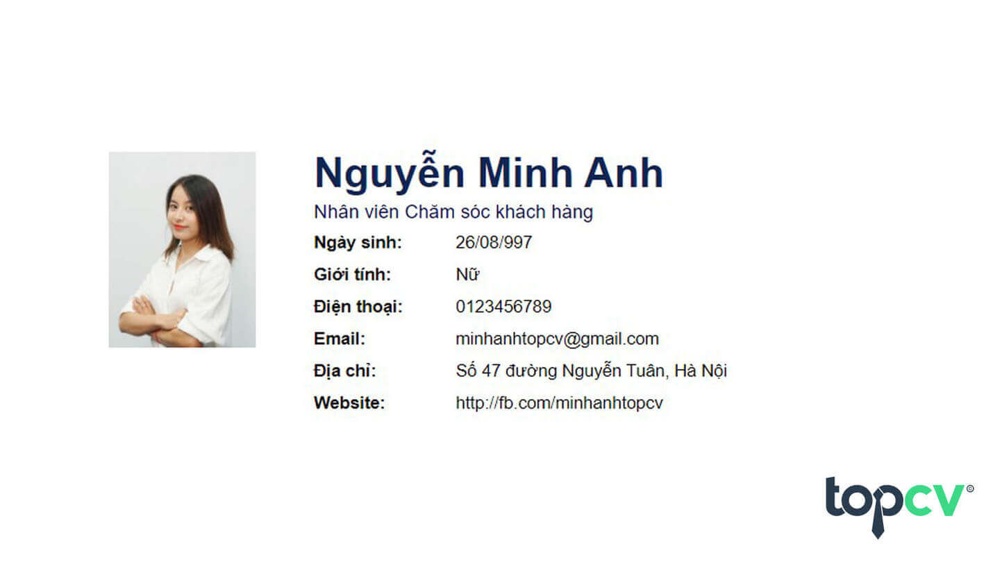
Ví dụ về giới thiệu bản thân trong CV
Mục tiêu nghề nghiệp trong CV
Mục tiêu nghề nghiệp trong CV là phần tiếp theo bạn cần lưu ý khi viết một CV. Mục tiêu nghề nghiệp không chỉ thể hiện nguyện vọng của bạn với vị trí công việc đang ứng tuyển mà còn cho thấy cách bạn đang định hướng cho tương lai của chính mình. Đó có thể là mục tiêu ngắn hạn hay dài hạn, nhưng hãy chú ý đặt mục tiêu thiết thực, phù hợp với khả năng và định hướng phát triển của bản thân. Đừng đặt mục tiêu quá thấp sẽ khiến nhà tuyển dụng cảm thấy bạn là người thiếu ý chí, nhưng đồng thời cũng đừng đặt mục tiêu quá “đao to búa lớn”. Sẽ có nhà tuyển dụng thích lắng nghe những mục tiêu “hão huyền” của bạn, nhưng họ chỉ chiếm số ít mà thôi.
Ví dụ về mục tiêu ngắn hạn và dài hạn trong CV cho vị trí Digital Marketing:
-
Mục tiêu ngắn hạn trong CV: Học được cách chạy ads và đo chỉ số chạy ads trong phần tin bài, học cách tạo một content bắt trend và chia sẻ content trên các mạng xã hội.
-
Mục tiêu dài hạn trong CV: Học tập, rèn luyện, nâng cao năng lực chuyên môn để trở thành trưởng phòng Marketing chuyên nghiệp trong vòng 5 năm tới.
>> Xem thêm: Những chia sẻ về mục tiêu nghề nghiệp trong CV mà bạn cần biết
Trình độ học vấn trong CV
Ứng viên nên nêu từ cấp Đại học/ Cao đẳng/ Trung cấp trở lên, kèm theo đó là niên khóa cũng như ngành học cụ thể ở trong trường hoặc khóa học ở bên ngoài nếu có. Bạn cũng có thể bổ sung điểm trung bình các môn học nếu cảm thấy tự tin.
Ví dụ:
-
2014-2018: Trường Đại học Hà Nội
-
Chuyên ngành Ngôn ngữ Anh
Một lưu ý cho ứng viên khi viết về trình độ học vấn trong CV là các bạn nên trung thực và ghi chính xác các thông tin liên quan tới môn học. Nhiều nhà tuyển dụng sẵn sàng bỏ thời gian để đối chiếu với trường lớp nơi bạn đề cập tới trong CV. Một điểm sai lệch cũng có thể khiến chiếc CV bạn tỉ mẩn chuẩn bị trở nên vô nghĩa.
Kinh nghiệm làm việc trong CV
Đây là mục để bạn thỏa thích thể hiện cho nhà tuyển dụng thấy những kỹ năng, kinh nghiệm mà bạn tích cóp được ở những công việc trước đó. Tuy nhiên hãy lưu ý rằng nhà tuyển dụng sẽ để tâm tới những kinh nghiệm làm việc trong CV liên quan tới vị trí công việc mà bạn đang ứng tuyển, như vậy chứng tỏ ứng viên sẽ nhanh chóng thích nghi với môi trường làm việc cũng như nhuần nhuyễn các đầu việc ngay từ sớm.
Trong trường hợp bạn là sinh viên mới ra trường và chưa có kinh nghiệm làm việc ở những vị trí liên quan, đừng ngại ngần kể ra những công việc làm thêm bạn đã trải qua trong thời gian còn ngồi trên ghế nhà trường, đồng thời tìm hiểu về vị trí công việc đang ứng tuyển để nhà tuyển dụng nhìn thấy ở bạn sự nhiệt huyết, luôn sẵn sàng để bắt đầu một công việc mới. Không chỉ vậy, bạn cũng có thể đề cập tới các câu lạc bộ, hội nhóm với chủ đề liên quan tới công việc đang ứng tuyển mà bạn đã tham gia, đây cũng là một điểm cộng lớn trong mắt nhà tuyển dụng.
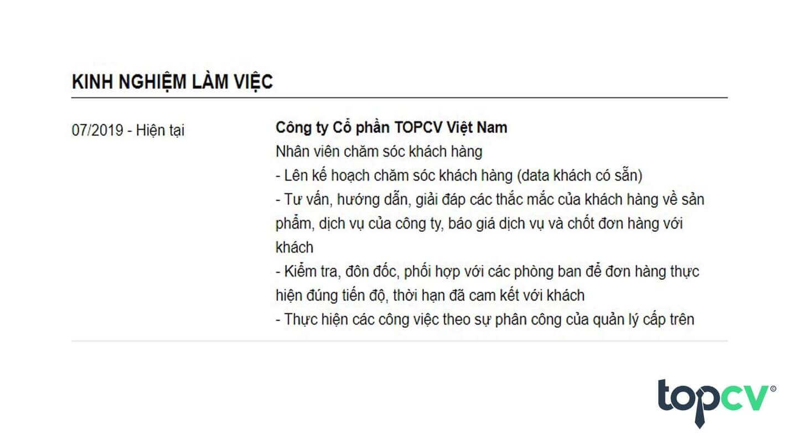
Mục kinh nghiệm làm việc trong CV nên được chăm chút kỹ lưỡng
Chứng chỉ và giải thưởng trong CV
Đây chính là thông tin khiến CV xin việc của bạn trở nên nổi bật và khác biệt. Bạn có thể đề cập tới những bằng cấp, giải thưởng bạn đạt được khi còn ngồi trên ghế nhà trường hoặc những thành tựu trong quá trình công tác tại những doanh nghiệp cũ. Những chứng chỉ ngoại ngữ (nếu có) cũng là một điểm cộng rất lớn. Giải thưởng và chứng chỉ hoặc đơn giản chỉ là thành tựu bạn đạt được ở chỗ làm cũ không chỉ thể hiện bạn là một ứng viên năng động, nhiệt huyết mà còn góp phần khẳng định vốn kiến thức chuyên môn sâu rộng của bạn.
Kỹ năng trong CV
Ngoài những kiến thức chuyên môn thì bạn cũng nên chuẩn bị cho những những kỹ năng nhất định để tiến hành công việc thuận lợi và hiệu quả hơn. Kỹ năng chia làm kỹ năng cứng và kỹ năng mềm, các kỹ năng cần có trong CV mà bạn không nên bỏ qua nếu muốn hồ sơ của mình trở nên hoàn hảo trong mắt nhà tuyển dụng bao gồm:
-
Kỹ năng làm việc nhóm
-
Kỹ năng giao tiếp
-
Kỹ năng lãnh đạo
-
Kỹ năng tư duy, phản biện
-
Kỹ năng giải quyết vấn đề
-
Kỹ năng đàm phán
-
Kỹ năng quản lý thời gian
-
...
Tùy theo yêu cầu công việc mà bạn nên liệt kê những kỹ năng trong CV khác nhau. Ngoài việc liệt kê các kỹ năng trên thì bạn cũng có thể đánh giá độ thuần thục kỹ năng trên thang điểm 5 để nhà tuyển dụng có cái nhìn chính xác hơn về các kỹ năng bạn sở hữu, đồng thời bạn cũng có thể tự đánh giá được kỹ năng của mình đang thiếu hụt ở đâu để trau dồi bổ sung kịp thời.
Điểm mạnh điểm yếu trong CV
Điểm mạnh điểm yếu trong CV không phải một mục bắt buộc, tuy nhiên sẽ giúp nhà tuyển dụng có cái nhìn chính xác hơn về con người và khả năng của bạn. Vậy nên ghi điểm mạnh và điểm yếu như thế nào để ghi điểm trong mắt nhà tuyển dụng?
Với điểm mạnh trong CV, bạn hãy ghi một cách trung thực và chính xác, không nên thổi phồng những điểm mạnh của bản thân vì chỉ với một vài câu hỏi đơn giản trong vòng phỏng vấn, nhà tuyển dụng sẽ dễ dàng phát hiện ra đâu mới là khả năng thật sự của bạn.
Với điểm yếu trong CV, hãy nêu những hạn chế bạn đang mắc phải và phương hướng giải quyết những điểm yếu đó để tiến xa hơn trong công việc. Với việc thể hiện quyết tâm khắc phục điểm yếu hiện có, nhà tuyển dụng sẽ nhìn ra tinh thần ham học hỏi và liên tục cải thiện bản thân của bạn.
Sở thích trong CV
Sở thích trong CV thường bị nhiều ứng viên coi nhẹ khi làm hồ sơ xin việc, tuy nhiên đây lại là mục thông tin để bạn thể hiện được cá tính của riêng mình. Có kiến thức và kỹ năng vẫn là chưa đủ, nhà tuyển dụng sẽ rất hài lòng nếu ứng viên của mình có những sở thích vừa mang màu sắc cá nhân, vừa chứng tỏ ứng viên có thể nhanh chóng hòa hợp với môi trường làm việc mới.
Không nên liệt kê quá nhiều sở thích không liên quan là điều mà ứng viên nên lưu ý khi trình bày sở thích trong CV .
Vậy nên viết gì trong phần sở thích trong CV? Bạn hãy tham khảo những câu hỏi gợi ý sau nhé:
-
Một số hoạt động bạn thường làm trong thời gian rảnh? (Đọc sách, du lịch, viết lách, v.v..).
-
Đam mê của bạn là gì? Bạn đã và đang làm gì để theo đuổi đam mê đó?
-
Ngoài những hoạt động thường ngày thì bạn có mong muốn tham gia các hoạt động khác để trau dồi những kỹ năng còn thiếu hay không?
Sở thích trong CV cũng là một trong những yếu tố quan trọng để nhà tuyển dụng nhìn nhận khái quát về tính cách của ứng viên, sau đó đưa ra những đánh giá sơ bộ về độ phù hợp của ứng viên với công việc. Tuy nhiên bạn cũng đừng nên quá khắt khe trong vấn đề này mà hãy tự tin chia sẻ những sở thích của mình trong CV.
Thông tin người tham chiếu trong CV
Người tham chiếu trong CV là gì? Rất nhiều nhà tuyển dụng có nhu cầu đối chiếu thông về kinh nghiệm làm việc của ứng viên với cơ quan, doanh nghiệp cũ, vì vậy bạn cũng nên chuẩn bị một phần thông tin tham chiếu với người phụ trách trực tiếp công việc của bạn ở chỗ làm cũ. Nếu bạn chưa từng làm việc trước đó, hãy điền thông tin của giáo viên phụ trách ngành học của bạn.
Thông tin người tham chiếu nên bao gồm họ tên, vị trí công việc, thông tin liên lạc có thể là số điện thoại hoặc thư điện tử.
Ví dụ:
-
Nguyễn Minh Anh - Trưởng phòng Marketing
-
Công ty Cổ phần TopCV Việt Nam
-
SĐT: 0123456789
Cách viết CV xin việc chuẩn
CV không chỉ là bản tóm tắt thông tin cá nhân, trình độ học vấn, kinh nghiệm việc làm của bạn mà còn là công cụ giúp bạn thể hiện được năng lực của mình, khiến bản thân trở nên nổi bật trong số hàng trăm, hàng ngàn ứng viên. Vậy làm sao để viết CV chuẩn, độc, lạ nhưng vẫn đầy đủ những thông tin cần thiết? Đâu là những tiêu chí bạn nên đảm bảo để CV của mình không bị trộn lẫn với rất nhiều ứng viên khác? Tham khảo những gợi ý sau đây về cách viết CV xin việc tại TopCV.
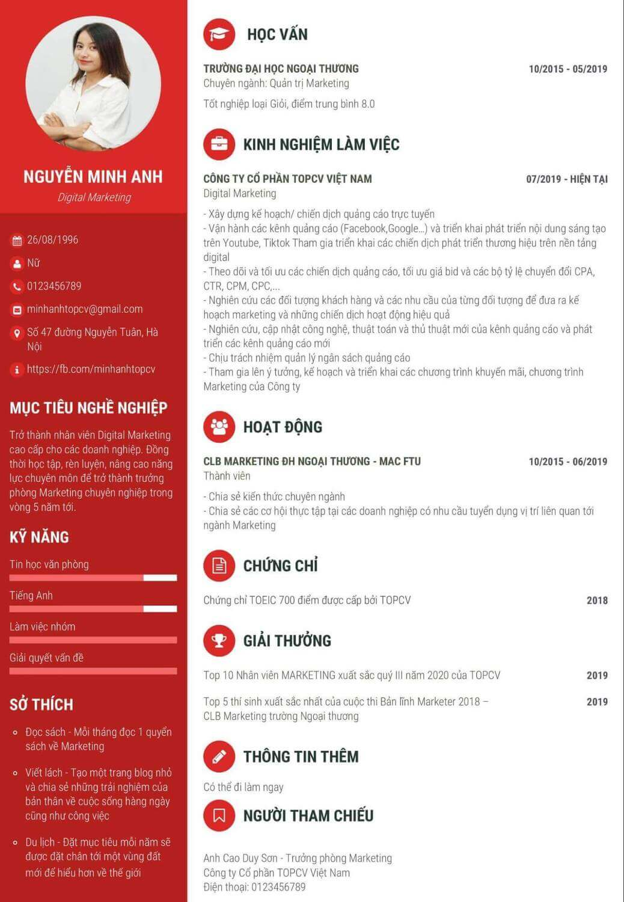
Tạo CV xin việc chuẩn tại TopCV
CV chuẩn không chỉ đáp ứng được những thông tin cơ bản mà còn cần phù hợp với ngành nghề mà bạn đang ứng tuyển. Nếu bạn đang ứng tuyển vào những công việc liên quan đến thiết kế, nghệ thuật thì một CV tự thiết kế sẽ là một điểm cộng rất lớn trong mắt nhà tuyển dụng, bởi khi đó CV không còn chỉ là một công cụ truyền tải thông tin mà còn là một ví dụ để nhà tuyển dụng nhìn ra sự sáng tạo, khéo léo trong con người bạn. Nếu bạn đang ứng tuyển vào một doanh nghiệp hoặc đơn giản chỉ là một dự án nước ngoài, một công việc cần sử dụng ngoại ngữ để giao tiếp với đồng nghiệp, đối tác thì một CV được viết bằng ngoại ngữ sẽ rất được chào đón. Hãy tham khảo các mẫu CV xin việc sau đây:
Cách viết CV xin việc tiếng Anh chuẩn
Tiếng Anh đã và đang là ngoại ngữ được học và sử dụng rất nhiều trong các cơ quan, doanh nghiệp. Để ứng tuyển vào vị trí việc làm tiếng Anh thì mẫu CV tiếng Anh là không thể thiếu. Cách viết CV tiếng Anh cũng không khác nhiều so với CV tiếng Việt, bạn luôn cần đảm bảo đầy đủ những thông tin sau:
1. Thông tin cá nhân: Personal details
Trong mục này hãy trình bày các thông tin sau bằng tiếng Anh:
|
Họ và tên |
Full name |
|
Ngày tháng năm sinh |
Date of birth (Ví dụ: 24 Aug, 1996) |
|
Địa chỉ |
Address |
|
Số điện thoại |
Phone number |
|
Thư điện tử |
|
|
Các trang thông tin trực tuyến, mạng xã hội, blog |
Website |
2. Mục tiêu nghề nghiệp: Career objective
Hãy nêu vắn tắt mục tiêu nghề nghiệp của bạn bằng tiếng Anh trong thời gian tới. Tham khảo mẫu mục tiêu nghề nghiệp tiếng Anh sau:
“ Become a senior Digital Marketing employee for businesses. At the same time, study, practice, and improve professional skills to become a professional Marketing Manager within the next 5 years.”
3. Trình độ học vấn, bằng cấp: Education and Qualifications
Một số từ vựng về trình độ học vấn, bằng cấp bằng tiếng Anh bạn nên sử dụng trong CV xin việc tiếng Anh:
|
GPA (Grade point average) |
Điểm trung bình |
|
Internship |
Thực tập sinh |
|
B.A. (Bachelor of Arts) |
Cử nhân |
|
Master |
Thạc sĩ |
|
Ph.D/Dr |
Tiến sĩ |
|
Professor |
Giáo sư |
|
Associate Professor |
Phó giáo sư |
|
Academic Rank/Academic title |
Học hàm, học vị |
|
Baccalaureate |
Tú tài, tốt nghiệp Trung học Phổ thông |
4. Kinh nghiệm làm việc: Work experience
Hãy gạch đầu dòng vắn tắt những công việc chính bạn đã từng đảm nhận ở chỗ làm cũ bằng tiếng Anh. Sau đây là một ví dụ về kinh nghiệm làm việc Digital Marketing bằng tiếng Anh:
“ - Develop online advertising campaign/plan
- Operate advertising channels (Facebook, Google...) and develop creative content on Youtube, Tiktok Participate in the implementation of brand development campaigns on a digital platform
- Track and optimize advertising campaigns, optimize bid prices and conversion rate sets CPA, CTR, CPM, CPC,...
- Research customer objects and the needs of each object to come up with effective marketing plans and campaigns
- Research and update new technology, algorithms and tricks of the advertising channel and develop new advertising channels
- Responsible for managing advertising budgets
- Participate in the idea, plan and implementation of promotions, Marketing programs of the Company”
Để tham khảo thêm CV theo ngành nghề hot với miêu tả chi tiết hơn, tham khảo: https://www.topcv.vn/mau-cv
5. Thành tựu, giải thưởng hoặc chứng chỉ: Achievements, prize and certificate
Tập trung vào những giải thưởng, chứng chỉ liên quan tới ngôn ngữ Anh như IELTS, TOEFL, TOEIC.
6. Sở thích cá nhân: Interests
Ở phần này, bạn nên liệt kê các hạng mục nêu bật được cá tính riêng của bạn, nhưng vẫn liên quan đến vị trí công việc bạn đang ứng tuyển.
Một số sở thích bằng tiếng Anh có thể viết trong CV là:
-
Listening to music
-
Reading books
-
Swimming
-
Bicycling
-
Traveling
-
Writing blog posts
7. Kỹ năng: Skills
Một số từ vựng liên quan tới kỹ năng trong mẫu CV tiếng Anh dành cho bạn:
|
Kỹ năng giao tiếp |
Communication skills |
|
Kỹ năng sáng tạo |
Creative skills |
|
Kỹ năng lập kế hoạch |
Planning skills |
|
Kỹ năng làm việc nhóm |
Teamwork skill |
|
Kỹ năng giải quyết vấn đề |
Problem-solving skills |
|
Kỹ năng quản lý thời gian |
Time management skills |
|
Kỹ năng học hỏi |
Learning skills |
|
Kỹ năng đàm phán |
Negotiation skills |
|
Kỹ năng lãnh đạo |
Leadership skills |
>> Xem thêm: Tổng hợp CV tham khảo các nhóm ngành cả Tiếng Anh và Tiếng Việt
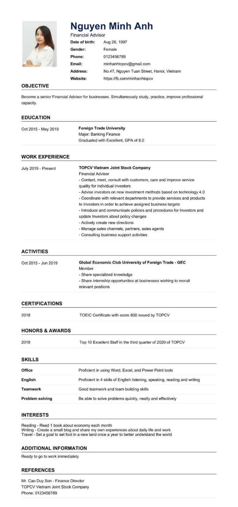
Tham khảo mẫu CV xin việc Tiếng Anh vị trí kế toán
Cách viết CV xin việc tiếng Nhật chuẩn
Việc các doanh nghiệp Nhật Bản tại Việt Nam được lập nên càng nhiều dẫn đến nhu cầu việc làm liên quan tới ngoại ngữ Nhật cũng tăng cao, khi đó một mẫu CV tiếng Nhật chuẩn là điều bạn nên chuẩn bị thật kỹ lưỡng. Nhìn chung, CV tiếng Nhật cũng cần đáp ứng những thông tin cá nhân cơ bản, trình độ học vấn, kinh nghiệm làm việc, cụ thể như sau.
1. Thông tin cá nhân: 個人情報
Một số đề mục bạn nên đề cập tới trong CV tiếng Nhật là:
|
Họ và tên đầy đủ |
名前と苗字. Đừng quên điền phiên âm tên của bạn bằng katakana để nhà tuyển dụng có thể phát âm tên bạn chính xác |
|
Ngày sinh |
生年月日. Điền theo định dạng của người Nhật: [Năm] 年 [Tháng] 月[Ngày]日 |
|
Địa chỉ |
住所 |
|
Số điện thoại |
電話番号 |
|
|
Eメール |
2. Mục tiêu nghề nghiệp: キャリア目標
Hãy nêu ngắn gọn mục tiêu nghề nghiệp của bạn trong CV tiếng Nhật, ví dụ với vị trí Digital Marketing như sau:
“ビジネスの高級なデジタルマーケティング従業員になりたいです。 同時に、今後5年以内にプロのマーケティングマネージャーになれるように、専門的なスキルを学び、練習し、向上するつもりです。”
3. Trình độ học vấn, bằng cấp: 学歴
Tham khảo một số từ vựng về bằng cấp trong tiếng Nhật:
|
Điểm trung bình |
GPA（平均点） |
|
Thực tập sinh |
インターンシップ |
|
Cử nhân |
学士 |
|
Thạc sĩ |
修士 |
|
Tiến sĩ |
博士 |
|
Giáo sư |
教授 |
4. Kinh nghiệm làm việc: 職歴
Hãy nêu vắn tắt kinh nghiệm làm việc của bạn bằng tiếng Nhật. Người Nhật thường không quá khuyến khích ứng viên nhảy việc liên tục nên bạn hãy lưu ý ghi lý do nghỉ việc ở những chỗ làm cũ thật cẩn thận. Nếu đã nhảy việc nhiều nơi thì bạn cũng nên cân nhắc lược bớt những công việc không liên quan ra khỏi CV.
5. Thành tựu, giải thưởng hoặc chứng chỉ: 免許・資格・証明書
Ngoài những thành tựu đã đạt được ở chỗ làm cũ, bạn cũng có thể đề cập tới những giải thưởng từ những cuộc thi bạn đã tham gia, hoặc đơn giản là chứng chỉ tiếng Nhật mà bạn đang sở hữu như JLPT, NAT-TEST hoặc TOP J là ba loại chứng chỉ tiếng Nhật phổ biến nhất tại Việt Nam.
6. Sở thích cá nhân: 特技・趣味・得意科目
Một trong những mẹo để mục sở thích cá nhân trong CV tiếng Nhật của bạn phát huy tối đa tác dụng là hãy chọn lọc những sở thích có thể mang lại lợi thế trong công việc của bạn, ví dụ như đọc sách, xem phim song ngữ Việt-Nhật, tham gia các khóa trao đổi ngôn ngữ mỗi cuối tuần, v.vv..
7. Kỹ năng: スキル
Kỹ năng là phần giúp bạn có thể chứng minh mình chính xác là ứng viên mà nhà tuyển dụng đang tìm kiếm, vì vậy đừng bỏ qua những từ vựng tiếng Nhật liên quan tới kỹ năng sau đây nhé:
|
Kỹ năng giao tiếp |
コミュニケーションスキル |
|
Kỹ năng sáng tạo |
クリエイティブスキル |
|
Kỹ năng lập kế hoạch |
計画スキル |
|
Kỹ năng làm việc nhóm |
チームワークスキル |
|
Kỹ năng giải quyết vấn đề |
問題解決スキル |
|
Kỹ năng quản lý thời gian |
時間管理スキル |
|
Kỹ năng học hỏi |
学習スキル |
|
Kỹ năng đàm phán |
交渉スキル |
|
Kỹ năng lãnh đạo |
リーダーシップスキル |
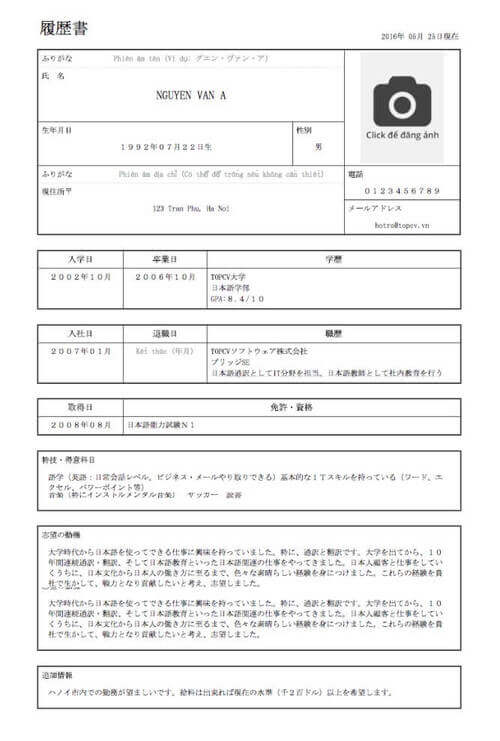
Tham khảo mẫu CV xin việc tiếng Nhật chuẩn tại TopCV
Cách viết CV xin việc tiếng Trung chuẩn
Với việc các doanh nghiệp Trung Quốc ngày càng xuất hiện nhiều ở Việt Nam, các công việc đòi hỏi thành tạo tiếng Trung cũng tăng cao với mức thu nhập đáng kể. Nếu bạn đang có ý định ứng tuyển vào các công việc có sử dụng tiếng Trung như một điều kiện bắt buộc thì CV tiếng Trung là không thể thiếu. Vậy cách viết CV tiếng Trung như thế nào?
CV tiếng Trung cũng giống như CV các ngôn ngữ khác, đều cần đảm bảo các nội dung cơ bản như sau:
1. Thông tin cá nhân: 个人信息
Trong mục thông tin cá nhân trong CV tiếng Trung bạn hãy chú ý đảm bảo các đầu mục sau:
|
Họ và tên đầy đủ |
全名 |
|
Ngày sinh |
出生日期 |
|
Địa chỉ |
地址 |
|
Số điện thoại |
电话号码 |
|
|
电子邮件 |
2. Mục tiêu nghề nghiệp: 职业目标
Viết vắn tắt mục tiêu nghề nghiệp của bạn trong tương lai, đó có thể là mục tiêu ngắn hạn hoặc dài hạn, và là rất tốt nếu mục tiêu đó được phát triển từ chính công việc mà bạn đã và đang trải nghiệm.
Mẫu mục tiêu nghề nghiệp bằng tiếng Trung cho vị trí Digital Marketing để bạn tham khảo như sau:
“成为企业的高级数字营销员工。 同时，学习，练习和提高专业技能，以在未来5年内成为专业的营销经理。”
3. Trình độ học vấn, bằng cấp: 学历，学位
Trình độ học vấn trong CV tiếng Trung sẽ giúp nhà tuyển dụng nhìn nhận xem bạn có đủ kiến thức chuyên ngành cho vị trí ứng tuyển này không, vị vậy đừng ngại ngần chia sẻ điểm trung bình hay bằng cấp bạn đạt được. Một số từ vựng liên quan tới bằng cấp, trình độ học vấn trong tiếng Trung.
|
Điểm trung bình |
GPA（平均积分点） |
|
Thực tập sinh |
实习生 |
|
Cử nhân |
BA (学士学位) |
|
Thạc sĩ |
硕士学位 |
|
Tiến sĩ |
博士/博士 |
|
Giáo sư |
教授 |
4. Kinh nghiệm làm việc: 工作经验
Một số kinh nghiệm làm việc có liên quan tới vị trí đang ứng tuyển sẽ giúp ích rất nhiều cho bạn trong quá trình xin việc. Ví dụ kinh nghiệm làm việc của vị trí Digital Marketing như sau:
“-制定在线广告活动/计划
-运营广告渠道（Facebook，Google ...）并在Youtube和Tiktok上开发创意内容，参与在数字平台上实施品牌发展活动
-跟踪和优化广告系列，优化出价和转化率 如 CPA，CTR，CPM，CPC，...
-研究客户对象和每个对象的需求，以制定有效的营销计划和活动
-研究和更新广告渠道的新技术，算法和技巧，并开发新的广告渠道
-负责管理广告预算
-参与公司促销，营销计划的构思，计划和实施”
5. Thành tựu, giải thưởng hoặc chứng chỉ: 成就，奖项，证书
Nêu khái quát những thành tựu bạn đã đạt được ở những chỗ làm cũ, hoặc chia sẻ những chứng chỉ ngoại ngữ Trung bạn đã đạt được như HSK, HSKK, TOCFL, BCT để khẳng định năng lực ngoại ngữ của mình đáp ứng được yêu cầu công việc.
6. Sở thích cá nhân: 个人喜好
Một số sở thích liên quan tới ngành học hoặc công việc sẽ giúp bạn lấy được điểm cộng trong mắt nhà tuyển dụng như đọc sách, xem phim song ngữ Việt-Trung, dịch thuật, tham gia vào các hội nhóm trao đổi ngôn ngữ mỗi cuối tuần, v.vv..
7. Kỹ năng: 技能
Những kỹ năng trong công việc mà bạn nên rèn luyện và chia sẻ trong CV gồm có:
|
Kỹ năng giao tiếp |
沟通能力 |
|
Kỹ năng sáng tạo |
创作能力 |
|
Kỹ năng lập kế hoạch |
规划能力 |
|
Kỹ năng làm việc nhóm |
团队协作能力 |
|
Kỹ năng giải quyết vấn đề |
问题解决能力 |
|
Kỹ năng quản lý thời gian |
时间管理能力 |
|
Kỹ năng học hỏi |
学习能力 |
|
Kỹ năng đàm phán |
谈判能力 |
|
Kỹ năng lãnh đạo |
领导能力 |
Cách viết CV ấn tượng cho sinh viên mới ra trường
Một trong những phần quan trọng của CV là kinh nghiệm việc làm bởi đây là một trong những cơ sở để nhà tuyển dụng đoán được khả năng thích nghi với công việc mới của ứng viên. Nhưng đối với những bạn sinh viên mới ra trường chưa từng làm việc tại bất kỳ cơ quan, doanh nghiệp nào thì đây lại là một câu hỏi khó. Vậy, cách viết CV cho sinh viên mới ra trường như thế nào? Đâu là những điểm cần lưu ý?
1. Thông tin cá nhân
Đây là phần thông tin cơ bản của CV cho sinh viên mới ra trường nên bạn tuyệt đối đừng bỏ qua nhé. Hãy nêu vắn tắt các thông tin về bản thân như họ tên đầy đủ, ngày tháng năm sinh, địa chỉ, thư điện tử và nếu có thể hãy chia sẻ các trang web nơi nhà tuyển dụng có thể hiểu nhiều hơn về bạn như Facebook, Instagram, blog cá nhân.
2. Mục tiêu nghề nghiệp
Nếu chưa từng có kinh nghiệm tiếp xúc với thị trường việc làm trước đó thì bạn hãy đặt mục tiêu với ngành học chính làm cơ sở, từ đó vạch ra mục tiêu ngắn hạn và dài hạn tùy theo năng lực của bản thân. Lưu ý là mục tiêu nên phù hợp với tình hình thực tế. Mục tiêu quá thấp hoặc quá cao dễ khiến nhà tuyển dụng đánh giá bạn chưa nắm rõ khả năng của bản thân.
3. Kinh nghiệm việc làm
Nếu bạn chưa từng làm việc tại một vị trí chính thức thì những công việc part time hoặc thực tập bạn đã tham gia khi còn ngồi trên ghế nhà trường cũng là một thông tin đáng giá để đưa vào CV. Đa số những sinh viên năng động, nhiệt huyết và có tinh thần học hỏi đều đã trải qua ít nhất một vị trí part time hoặc thực tập sinh trong quá trình học tập, chính những công việc đó sẽ giúp các bạn được sớm cọ xát với môi trường làm việc sau này.
4. Bằng cấp, chứng chỉ
Đây là cách nhanh nhất để đánh giá sơ bộ trình độ, kiến thức của bạn khi đến với vị trí đang ứng tuyển này. Điểm trung bình, bằng tốt nghiệp hoặc các chứng chỉ, bằng khen liên quan tới chuyên môn việc làm là những điểm cộng rất lớn trong mắt nhà tuyển dụng. Bạn chú ý chia sẻ một cách trung thực nhé, bởi nhà tuyển dụng sẽ dễ dàng đối chiếu thông tin với những trường lớp bạn từng học qua, và chỉ một sai sót nhỏ cũng sẽ khiến chiếc CV được chuẩn bị tỉ mỉ của bạn trở nên vô giá trị.
5. Sở thích cá nhân: Đọc sách, nghe nhạc, đi du lịch, tham gia các câu lạc bộ, hội nhóm để trao đổi kiến thức chuyên môn, v.vv.. là những ý bạn có thể liệt kê vào CV xin việc của mình.
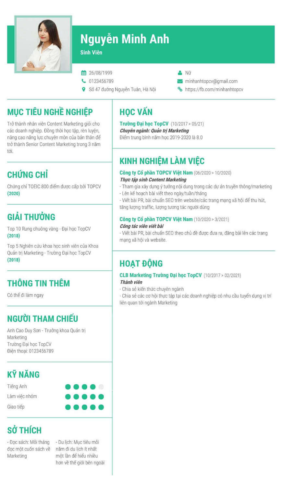
Tham khảo ví dụ CV cho sinh viên mới ra trường
Cách viết CV xin thực tập cho sinh viên
Tham gia các công việc bán thời gian hoặc thực tập từ sớm sẽ giúp các bạn sinh viên có cơ hội cọ xát với môi trường làm việc, có thêm định hình về nghề nghiệp tương lai, ngoài ra còn có thêm thu nhập để nâng cao mức sống. Tuy nhiên làm thế nào để thuyết phục nhà tuyển dụng nhận bạn vào làm khi bản thân bạn chưa hề có kinh nghiệm làm việc trước đó?
1. Thông tin cá nhân
Như thường lệ, đây là phần thông tin cơ bản mà ứng viên cần trình bày trong CV xin thực tập . Các thông tin về họ tên, ngày tháng năm sinh, địa chỉ, phương thức liên lạc ghi ngắn gọn, rõ ràng.
2. Lý lịch học tập
Ghi rõ tên của trường Đại học, Cao đẳng, Trung cấp hoặc các cơ sở giáo dục khác mà bạn đã và đang theo học. Ghi rõ các ngành học để nhà tuyển dụng đánh giá được mức độ phù hợp của bạn với công việc.
3. Mục tiêu nghề nghiệp
Thường thì các bạn thực tập sinh thời gian này chưa định hình được định hướng phát triển trong tương lai của mình, vì vậy bạn chỉ cần chia sẻ nguyện vọng của mình khi ứng tuyển vào công việc này là để học tập, tích lũy kinh nghiệm cũng như có thêm trải nghiệm về thị trường việc làm hiện giờ.
4. Bằng cấp, chứng chỉ
Tuy không bắt buộc nhưng bằng cấp, chứng chỉ có thể giúp bạn khẳng định mình đã trang bị đủ kiến thức trên mặt lý thuyết để bắt tay vào công việc một cách nhanh chóng và hiệu quả nhất.
Bạn hãy trình bày CV xin thực tập một cách khoa học, logic, tránh hết sức những lỗi chính tả, gạch xóa trong bài vì sẽ khiến CV trở nên thiếu chuyên nghiệp, chỉn chu.
>> Có thể bạn quan tâm: Tìm hiểu cách trình bày báo cáo thực tập hoàn hảo nhất cùng TopCV
Cách viết CV xin học bổng du học chuẩn
Nếu bạn đang dự định xin học bổng để đi du học thì một xin học bổng du học chuẩn là không thể thiếu. CV này sẽ là một trong những yếu tố quyết định thành bại của quá trình xin học bổng, vậy cách viết CV xin học bổng du học chuẩn là như thế nào?
CV du học có thể được trình bày bằng tiếng Việt hoặc tiếng Anh tùy theo yêu cầu của trường học nơi bạn xin học bổng, tuy nhiên tiếng Anh luôn là sự lựa chọn tối ưu.
Thông tin cá nhân
Thông tin cá nhân nên đảm bảo các nội dung về họ tên đầy đủ, ngày tháng năm sinh, địa chỉ, số điện thoại phục vụ mục đích liên lạc, blog cá nhân hoặc trang cá nhân trên mạng xã hội nên xuất hiện trong mục này nếu bạn cảm thấy tự tin, bởi đây là một trong những đặc điểm giúp hội đồng xét duyệt hiểu sâu hơn về tính cách, con người của bạn.
Lý lịch học tập
Nêu ngắn gọn quá trình học tập của bạn: Trường, lớp, chuyên ngành học, điểm GPA. Nếu bạn theo học các khóa học ngoại ngữ, những chương trình giáo dục chất lượng cao hoặc liên kết với các trường học quốc tế khác thì đừng quên ghi vào CV xin học bổng du học của mình nhé.
Bằng cấp, chứng chỉ
Đây là yếu tố quan trọng góp phần quyết định sự thành bại của CV xin học bổng du học của bạn. Bạn hãy chú ý điền tất cả những chứng chỉ, giải thưởng mà bạn đã đạt được trong suốt quá trình học tập, điều này sẽ khiến CV của bạn trở nên sáng giá và nổi bật hơn rất nhiều.
Kinh nghiệm làm việc
Nếu bạn đã từng tham gia các công việc part time hay thực tập ở các cơ quan, doanh nghiệp thì đừng ngại ngần đề cập tới trong CV của mình. Kiến thức rất quan trọng nhưng những kỹ năng, kinh nghiệm bạn trau dồi được ngoài trường học chính là một điểm cộng rất lớn trong CV xin học bổng du học.
Sở thích
Về sở thích, bạn có thể ghi những việc thường làm trong thời gian rảnh rỗi như nghe nhạc, đọc sách, xem phim, một số hoạt động như học ngoại ngữ hoặc tham gia các hội nhóm trao đổi ngoại ngữ định kỳ nếu cũng sẽ tạo thêm lợi thế cho CV xin học bổng du học của bạn.
Kỹ năng
Hãy xác định đâu là những kỹ năng bạn cần để phát triển bản thân trong ngành nghề đã lựa chọn. Một số kỹ năng như kỹ năng làm việc nhóm, kỹ năng giải quyết vấn đề, kỹ năng lắng nghe, v.v.. đều có thể trau dồi và tôi luyện từ sớm.
Cách viết CV cho sinh viên chưa tốt nghiệp
Sinh viên mới ra trường hầu như chưa có nhiều kinh nghiệm làm việc cũng như kỹ năng chuyên môn hỗ trợ việc phát triển công việc tương lai sau này, vậy làm thế nào để CV cho sinh viên chưa tốt nghiệp của bạn trở nên nổi bật và để lại dấu ấn trong nhà tuyển dụng?
Cách viết CV dành cho sinh viên chưa tốt nghiệp cũng giống như những mẫu CV khác là đảm bảo các mục thông tin cơ bản, đồng thời đào sâu vào các hoạt động đã tham gia khi còn ngồi trên ghế nhà trường:
1. Thông tin cá nhân
Nêu ngắn gọn và đầy đủ những thông tin về họ và tên, ngày tháng năm sinh, địa chỉ, số điện thoại, thư điện tử, các trang blog cá nhân với mục đích chia sẻ thông tin về cuộc sống hoặc kiến thức chuyên môn.
2. Mục tiêu nghề nghiệp
Nếu là sinh viên mới chưa tốt nghiệp và chưa định hình được hướng phát triển lâu dài thì bạn có thể đề cập tới mục tiêu ngắn hạn trong CV như học thêm những kỹ năng chuyên môn trong 1 năm tới.
3. Lý lịch học tập
Đây là một trong những cơ sở để nhà tuyển dụng năm được năng lực chuyên môn của bạn khi kinh nghiệm việc làm chưa được đề cập tới nhiều. Hãy liệt kê trường học và ngành học của bạn một cách ngắn gọn và rõ ràng.
4. Bằng cấp, chứng chỉ
Bằng cấp và chứng chỉ sẽ là thước đo cho sự nghiệp học tập trước đây của bạn. Có thể đề cập tới điểm GPA, kết quả tốt nghiệp năm cuối, những chứng chỉ ngoại ngữ, tin học, v.vv.. và những giải thưởng bạn đã gặt hái được.
5. Kinh nghiệm làm việc
Nếu chưa từng có cơ hội làm việc chính thức tại bất kỳ vị trí gì thì kinh nghiệm làm việc part time hoặc thực tập cũng khiế n CV cho sinh viên chưa tốt nghiệp của bạn tỏa sáng. Đừng quên chia sẻ những kiến thức, kinh nghiệm bạn đã tiếp thu và học tập được với những vị trí ấy nhé.
6. Sở thích
Sở thích trong CV dành cho sinh viên chưa tốt nghiệp không đòi hỏi phức tạp, tuy nhiên hãy khéo léo lựa chọn những sở thích có thể giúp ích trong công việc sau này như đọc sách, xem phim để trau dồi kiến thức, học ngoại ngữ, đi du lịch, v.vv..
7. Kỹ năng
Kỹ năng làm việc nhóm, kỹ năng giải quyết vấn đề, kỹ năng giao tiếp là những kỹ năng các bạn sinh viên sẽ dễ dàng rèn luyện được ngay từ khi còn ngồi trên ghế nhà trường.
CV theo ngành nghề phổ biến
Nếu bạn đang có nhu cầu ứng tuyển vào những công việc đang phổ biến hiện tại và chưa biết nên viết CV online như thế nào để phù hợp nhất với ngành nghề đang ứng tuyển, vậy hãy tham khảo những mẫu CV theo ngành nghề của TopCV. Mẫu CV ngành nghề tại TopCV luôn đảm bảo những thông tin cần thiết của một CV chuẩn, đồng thời cung cấp nhiều lựa chọn về màu sắc, cách trình bày. Chiếc CV của bạn sẽ trở nên nổi bật giữa hàng nghìn ứng viên chỉ với một vài thao tác đơn giản và hoàn toàn miễn phí.
Mẫu CV xin việc kế toán
Việc làm ngành Kế toán yêu cầu sự chính xác, tỉ mỉ đặc biệt với các con số. CV ngành kế toán có thể chia thành các vị trí cụ thể: Kế toán trưởng, kế toán kho, kế toán bán hàng, kế toán nợ, kế toán doanh thu, v.vv.. tùy theo nhu cầu của doanh nghiệp.
Mẫu CV xin việc làm kế toán cũng cần nêu ra bằng cấp, chứng chỉ và kinh nghiệm bạn tích lũy được. Đây sẽ điểm cộng và là yếu tố để các nhà tuyển dụng đánh giá cao về trình độ năng lực chuyên môn của bạn.
Ngoài những thông tin cơ bản trong CV xin việc kế toán thì các chia sẻ về kỹ năng, sở thích cũng đóng vai trò quan trọng. Với CV xin việc kế toán thì các kỹ năng phục vụ trực tiếp cho công việc như kỹ năng giải quyết vấn đề, kỹ năng học hỏi, kỹ năng lập kế hoạch, kỹ năng quản lý thời gian đều được đánh giá cao. Ngoài ra, khả năng tính toán, làm việc với bảng tính, chịu áp lực cũng rất cần thiết, nhất là trong những dịp cao điểm như đầu tháng, cuối tháng, cuối năm.
Về hình thức, CV cần được trình bày chỉn chu, rõ ràng và dễ nhìn, dễ đọc, không nên sử dụng quá nhiều màu sắc, phông chữ trong CV kế toán .
Các bạn có thể tham khảo mẫu CV xin việc kế toán dưới đây của TopCV.
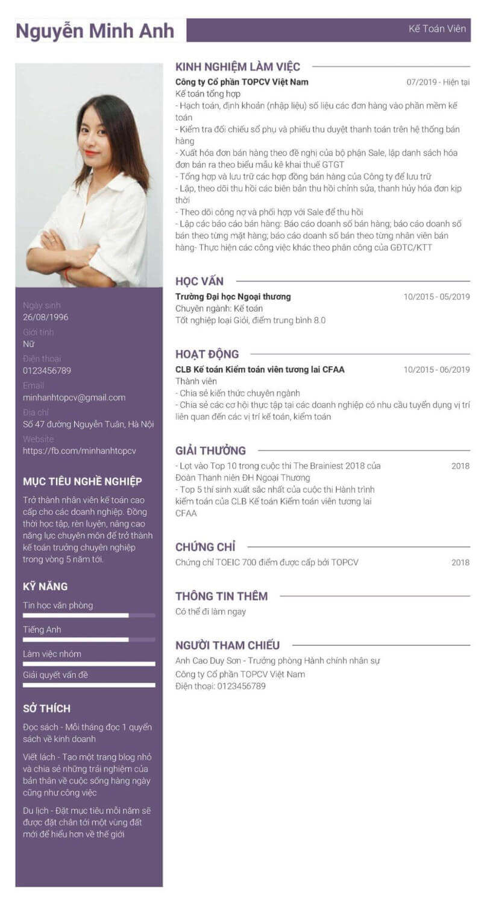
Mẫu CV xin việc kế toán chuẩn đẹp
Mẫu CV xin việc IT
Trong kỷ nguyên công nghệ 4.0 ngành IT đang trở nên hot hơn bao giờ hết, đi kèm với đó là rất nhiều cơ hội việc làm IT với đãi ngộ tốt. Tuy tình hình tuyển dụng ngày này là không quá cạnh tranh, ứng viên vẫn nên chuẩn bị cho mình một mẫu CV IT chuẩn. Ngành IT bao gồm nhiều vị trí khác nhau để ứng tuyển như IT phần cứng, IT phần mềm, IT support, IT helpdesk, lập trình viên PHP, lập trình viên Java, v.vv.. tùy theo nhu cầu tuyển dụng của doanh nghiệp. Mẫu CV IT tiếng Việt không yêu cầu cao về mặt hình thức nhưng vẫn nên trình bày gọn gàng, sạch sẽ, đảm bảo tính xác thực của thông tin.
Ngoài những thông tin cơ bản thì bạn cũng có thể bổ sung thành tích của những dự án bạn đã từng tham gia. Bắt đầu từ khái quát mục đích, quy mô của dự án, vai trò của bạn trong việc phát triển dự án và kết quả của dự án. Kinh nghiệm, bài học rút ra sau khi thực hiện mỗi dự án cũng khiến nhà tuyển dụng có nhìn nhận tốt về năng lực học hỏi và tiếp thu của bạn.
Nếu bạn chưa hình dung được những chi tiết xuất hiện trong CV xin việc IT thì có thể tham khảo mẫu CV xin việc IT dưới đây của TopCV.
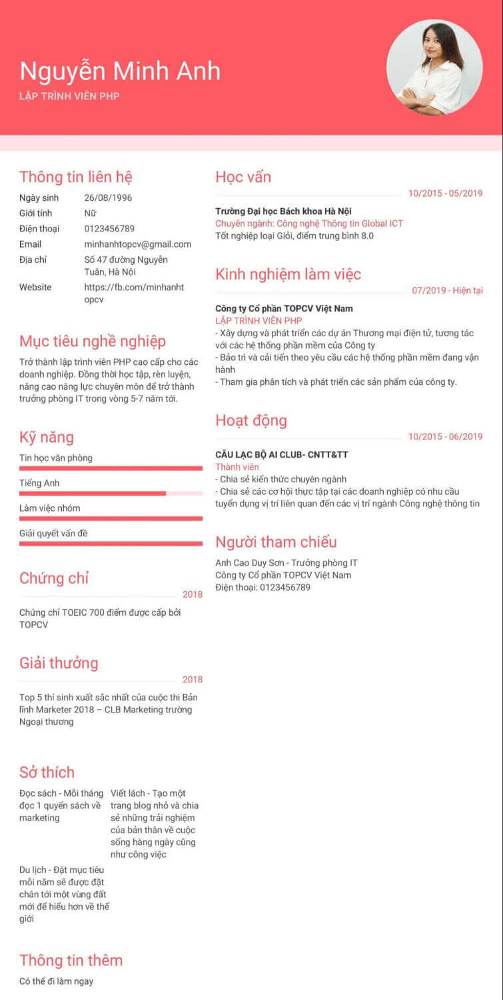
Mẫu CV xin việc IT chuẩn tại TopCV
Mẫu CV xin việc nhân viên kinh doanh
Nhân viên kinh doanh là một trong những vị trí có nhu cầu tuyển dụng lớn và tuyển liên tục. Yêu cầu tuyển dụng của ngành này khá khắt khe nên CV cũng nên được trình bày chỉnh chu và gọn gàng. Một số lưu ý mà bạn nên nắm rõ khi viết CV ngành này là: Do đặc thù công việc là một trong những vị trí trực tiếp đem lại doanh thu cho công ty nên những con số trong CV nên chính xác và được làm nổi bật, bởi đó chính là thước đo kết quả công việc của bạn ở chỗ làm cũ.
Ngoài ra, một số kỹ năng như kỹ năng giao tiếp, kỹ năng đàm phán, thuyết phục, kỹ năng giải quyết vấn đề cũng cần được nêu ra, bởi nhân viên kinh doanh là người tiếp xúc và làm việc với khách hàng rất thường xuyên.
Bên cạnh đó, tại TopCV bạn sẽ được cung cấp các thông báo tuyển dụng của các doanh nghiệp lớn nhỏ trên cả nước. Ngoài ra, trong phần tin tức bạn sẽ được bổ sung các kiến thức về nghề nghiệp, các câu hỏi thường được nhà tuyển dụng đưa ra trong buổi phỏng vấn, những điều cần cần chuẩn bị trước khi đi phỏng vấn, v.vv.. để ứng viên có thể đạt tỷ lệ trúng tuyển cao nhất.

Mẫu CV xin việc nhân viên kinh doanh chuẩn
Mẫu CV xin việc chăm sóc khách hàng
Với thu nhập hấp dẫn và đãi ngộ cao, việc làm chăm sóc khách hàng đang trở thành một trong những công việc “hot” nhất trên thị trường tuyển dụng hiện giờ, đi cùng với đó là sự cạnh tranh gắt gao giữa các ứng viên, đó là lý do bạn nên cần CV xin việc chăm sóc khách hàng của mình trở nên nổi bật.
Mẫu CV xin việc chăm sóc cần chú trọng những chi tiết về kinh nghiệm làm việc và kỹ năng bởi đây là một công việc thường xuyên phải chịu nhiều áp lực và tiếp xúc rất nhiều với khách hàng. Những kỹ năng như kỹ năng giao tiếp, kỹ năng giải quyết vấn đề, kỹ năng đàm phán, kỹ năng quản lý thời gian là không thể thiếu trong mẫu CV xin việc chăm sóc khách hàng.
Đối với hình thức của mẫu CV xin việc chăm sóc cần trình bày rõ ràng, đặc biệt nhấn mạnh vào kinh nghiệm làm việc, thái độ làm việc của ứng viên.
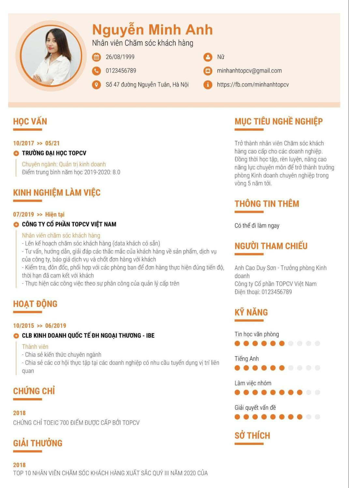
Mẫu CV xin việc chăm sóc khách hàng bạn có thể tham khảo tại TopCV
Mẫu CV xin việc Marketing
Marketing đang là một trong những ngành nghề có sức hút lớn, đặc biệt là đối với giới trẻ nhờ tính chất năng động, trẻ trung trong công việc. Ngành Marketing thường tuyển dụng những vị trí như marketing online, telemarketing, content marketing, digital marketing, v.vv..
Do tính chất công việc nên mẫu CV xin việc marketing khuyến khích trình bày sáng tạo, màu sắc nhưng cũng nên chú ý cần dễ nhìn, dễ đọc. Những kinh nghiệm việc làm rút ra từ công việc cũ hoặc những dự án đã thực hiện là một điểm cộng trong mắt nhà tuyển dụng. Nếu bạn đã từng đảm nhận các vị trí liên quan tới ngành marketing cho các dự án quảng bá sản phẩm, dịch vụ trước đó thì hãy chia sẻ với nhà tuyển dụng trong mẫu CV ngành marketing nhé. Quy mô dự án, thành phần tham gia, kết quả dự án và đặc biệt là mô tả công việc của bạn trong dự án đó là những chi tiết bạn không nên bỏ qua.
Nếu muốn tham khảo CV ngành marketing bạn có thể tham khảo mẫu CV dưới đây của TopCV.
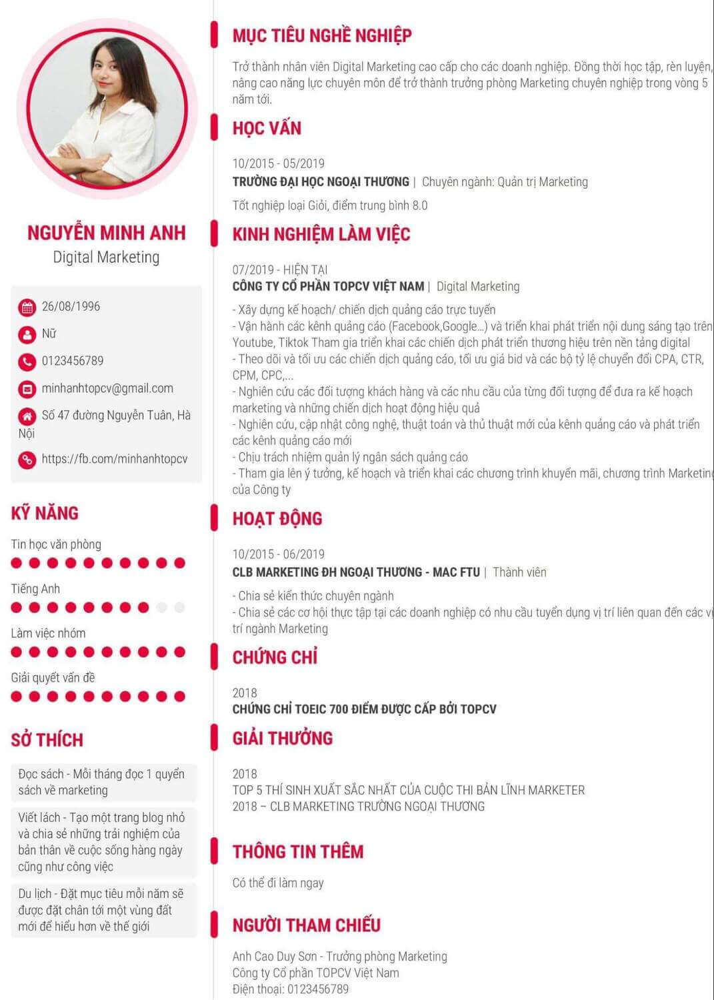
Tham khảo mẫu CV xin việc Digital Marketing chuẩn
Mẫu CV xin việc hành chính nhân sự
Đi cùng với sự phát triển của các cơ quan, doanh nghiệp là nhu cầu tuyển dụng nhân sự ngày càng lớn, vì vậy các vị trí việc làm hành chính nhân sự cũng tăng lên đáng kể. Ngành hành chính nhân sự bao gồm các công việc liên quan tới “hành chính” và “nhân sự” với các vị trí lễ tân, tuyển dụng, kế toán, v.vv.. tùy theo nhu cầu của doanh nghiệp.
Mẫu CV xin việc hành chính nhân sự cần chỉn chu, gọn gàng, ngoài những thông tin cơ bản về bản thân cũng như lý lịch học tập thì ứng viên ứng tuyển vào vị trí hành chính nhân sự cũng cần chú trọng tới những hoạt động xã hội đã tham gia nếu có, đây sẽ là một điểm cộng rất lớn trong CV của ứng viên.
Ngoài ra, các kỹ năng phục vụ cho công việc như kỹ năng giao tiếp, kỹ năng giải quyết vấn đề, kỹ năng đàm phán cũng nên được đề cập tới.
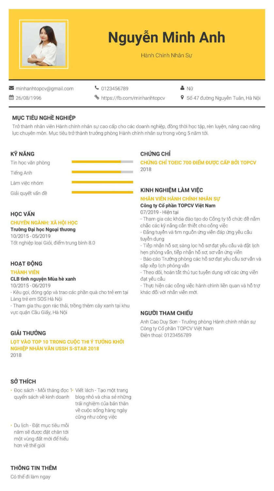
Mẫu CV xin việc Hành chính nhân sự chuẩn
Nếu bạn chưa hình dung được nên trình bày một CV ứng tuyển vào vị trí này như thế nào, hãy tham khảo mẫu CV xin việc hành chính nhân sự dưới đây của TopCV nhé!
Tạo CV online miễn phí trên TopCV
Cùng với sự gia tăng đáng kể của nhu cầu tuyển dụng, rất nhiều nền tảng trực tuyến đã ra đời nhằm đáp ứng nhu cầu của ứng viên và cả nhà tuyển dụng. Với đặc điểm sẽ sử dụng, dễ tải về máy và nộp cho nhà tuyển dụng thông qua thư điện tử hoặc bất cứ nền tảng kết nối nào, CV xin việc online ngày càng được ưa chuộng.
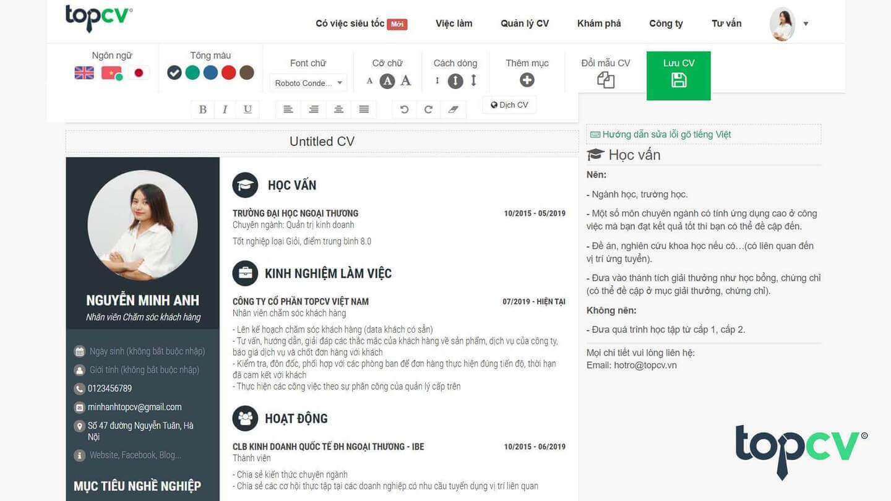
Tạo và chỉnh sửa thông tin trong CV online dễ dàng với TopCV
Là một trong những người tiên phong trong công cụ tạo CV online miễn phí, TopCV đã và đang cung cấp cho người dùng những mẫu CV chuẩn, độc, lạ với đa dạng màu sắc, ngành nghề. Để tạo CV online đơn giản miễn phí trên TopCV bạn chỉ cần làm theo hướng dẫn sau đây:
Bước 1: Truy cập vào trang chủ của TopCV tại đường dẫn: https://www.topcv.vn/, chọn Mẫu CV hoặc trực tiếp sử dụng đường dẫn sau: https://www.topcv.vn/mau-cv
Bước 2: Chọn Tạo CV và chọn cho mình loại CV yêu thích. TopCV cung cấp nhiều mẫu CV đa dạng về thể loại như mẫu CV dòng thời gian, mẫu CV ấn tượng, mẫu CV tiêu chuẩn, mẫu CV thanh lịch, v.vv..
Ngoài ra, TopCV mới cập nhật thêm các mẫu CV “trendy” phù hợp với những ứng viên đang tìm kiếm một mẫu CV độc, lạ như:
-
TinTop - Lấy cảm hứng từ ứng dụng Tinder
-
SpotTop - Lấy cảm hứng từ streaming âm nhạc
-
InstaTop - Lấy cảm hứng từ Instagram
Và còn rất nhiều mẫu CV online sắp ra mắt tiếp theo như TikTop, FaceTop, GoTop,...
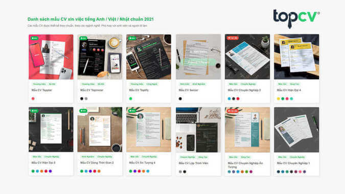
Một số mẫu CV chuẩn, độc, lạ tại TopCV
Bước 3: Chọn ngôn ngữ và màu sắc CV. Tại TopCV bạn có thể lựa chọn những loại ngôn ngữ như tiếng Việt, tiếng Anh hoặc tiếng Nhật tùy theo nhu cầu. Tùy theo từng loại CV mà có những loại màu sắc khác nhau để lựa chọn, bạn có thể lựa chọn màu sắc phụ thuộc vào cá tính của mình hoặc đơn giản chỉ là những màu sắc khớp với logo doanh nghiệp để nhà tuyển dụng nhìn ra sự chỉn chu , đầu tư từng chi tiết nhỏ của bạn.
Bước 4: Nhập thông tin theo những mục đã được chỉ định trong CV. Bạn có thể lựa chọn thêm mục thông tin hoặc lược bớt nhờ tính năng cá nhân hóa mục CV như hình dưới đây.
Bước 5: Lưu CV. Bạn có thể xem trước CV bằng cách nhấn nút “Xem” và tải CV về máy dưới dạng .pdf. Nếu muốn thay đổi thông tin trên CV, bạn chỉ cần vào lại trang “Tạo CV”, chọn “Quản lý CV” và sửa CV cũ theo ý của mình, rất tiện lợi.
Tải CV miễn phí từ TopCV nhanh chóng, dễ dàng
Một số lưu ý khi viết CV bạn nên nắm rõ
Đảm bảo về mặt chính tả, ngữ pháp
CV là công cụ mà qua đó bạn có thể thể hiện trình độ, năng lực của mình, là bộ mặt của ứng viên, vì vậy hãy chú ý tới những yếu tố cơ bản nhất như chính tả, ngữ pháp. Không mất quá nhiều thời gian để soát lại một lượt CV trước khi gửi đi nên bạn đừng bỏ qua bước này nhé.
Đối với những CV không viết bằng tiếng Việt hoặc ngoại ngữ, chú ý sử dụng những từ ngữ phù hợp với văn hóa của từng quốc gia.
Từ lóng, từ viết tắt, từ địa phương cũng hạn chế xuất hiện trong CV.
CV sạch sẽ, chuyên nghiệp
Gập CV lại là một lỗi cơ bản mà rất nhiều ứng viên đang mắc khi đi ứng tuyển. Thay vì gập CV lại bạn có thể dễ dàng tìm mua túi đựng tài liệu để đảm bảo CV của bạn ở trạng thái tốt nhất, không có nếp gấp hay nhàu nát.
Ngoài ra, bạn nên hạn chế tẩy xóa trong CV. Nếu có lỗi sai có thể lên trang tại CV online để chỉnh sửa thay vì gạch xóa gây mất thẩm mỹ.
Viết CV quá dài
Khi nhận CV của ứng viên, điều duy nhất mà nhà tuyển dụng quan tâm là những kinh nghiệm việc làm, trình độ học vấn và kỹ năng, sở thích có thể hỗ trợ bạn trong công việc sau này, vì vậy nếu bạn ghi CV quá dài và không đi vào trọng tâm sẽ rất khó để nhà tuyển dụng đọc hết CV của bạn, vừa tốn thời gian của đôi bên vừa để lại ấn tượng không tốt.
Viết CV thiếu trung thực
Nhà tuyển dụng sẽ rất dễ dàng kết nối với các cơ sở đào tạo hoặc cơ quan, doanh nghiệp cũ của bạn nếu thật sự có nhu cầu đối chiếu thông tin, vì vậy hãy trung thực khi viết CV xin việc. Một thông tin sai lệch cũng có thể khiến CV của bạn bị loại ngay lập tức.
Ngoài ra, nếu bạn cố tình thổi phồng những kỹ năng, kinh nghiệm mình đang có, nhà tuyển dụng cũng có thể phát hiện ra thông qua một số câu hỏi chuyên môn trong buổi phỏng vấn, vì vậy hãy chia sẻ thông tin một cách khách quan, chính xác.
Viết quá nhiều công việc trong một thời gian ngắn
Nhảy việc liên tục là một điểm trừ rất lớn trong CV vì điều đó thể hiện bạn là một ứng viên không có tinh thần gắn bó lâu dài với nơi làm việc, nếu bạn đã dễ dàng nhảy việc trong quá khứ thì nguy cơ rất cao bạn cũng sẽ nhảy việc sau một thời gian ngắn làm việc tại vị trí đang ứng tuyển hiện giờ nếu cảm thấy mình không thích ứng tốt với công việc và môi trường làm việc.
Bố cục CV không hợp lý
Hãy sắp xếp các ý trong CV từ những thông tin cơ bản tới những thông tin chuyên môn hơn. Thứ tự sắp xếp tốt trong CV được hiểu như sau:
-
Thông tin cá nhân + Ảnh chân dung
-
Mục tiêu nghề nghiệp
-
Trình độ học vấn
-
Kinh nghiệm làm việc
-
Bằng cấp, giải thưởng, chứng chỉ
-
Những dự án đã tham gia (nếu có)
-
Kỹ năng
-
Sở thích
-
Thông tin người tham chiếu
Gửi CV dưới dạng Word
CV dưới dạng Word không được tính là một lỗi trong quá trình gửi CV những đó không phải dạng tệp tối ưu để gửi CV với những lý do sau:
-
Không phải nhà tuyển dụng nào cũng sử dụng hệ điều hành Windows, vậy nên nếu bạn gửi một CV dưới dạng file Word, việc lỗi phông chữ, lỗi giãn cách dòng là điều không thể tránh khỏi.
-
CV file Word có thể chỉnh sửa bởi bất kỳ ai sau khi lưu về máy, vì vậy để đảm bảo những thông tin của bạn được “nguyên vẹn” khi tới tay nhà tuyển dụng, hãy hạn chế sử dụng CV file Word.
-
CV file Word có những hạn chế nhất định về bố cục và màu sắc.
Vì vậy để đảm bảo cho chiếc CV đã được chuẩn bị cầu kỳ, tỉ mỉ của bạn đạt tình trạng tốt nhất, hãy sử dụng CV dạng .pdf.
Những cụm từ “hời hợt” trong CV
“Cá nhân đầy hoài bão”, “Có tinh thần làm việc tốt”, “Có khả năng thuyết phục”, “Có kỹ năng thuyết trình”, “Có kỹ năng lãnh đạo”, v.vv.. được coi là những cụm từ “hời hợt” trong CV bởi những cụm từ đó gần như là vô nghĩa và không chứng tỏ được bất cứ ưu điểm gì ở bản thân bạn.
Nếu bạn thật sự có khả năng, vậy hãy liệt kê những dự án, công trình từng tham gia cũng như nêu lên vai trò của bạn trong những dự án, công trình ấy để chứng minh. Tuy nhiên hãy nhớ rằng CV là bản liệt kê, không phải bản mô tả, vì vậy đừng quá lạc trong câu chữ của chính mình mà nên viết vắn tắt, ngắn gọn. Nếu muốn chia sẻ nhiều hơn với nhà tuyển dụng, hãy trao đổi trong buổi phỏng vấn.
Nên in CV 1 mặt hay 2 mặt?
Dù chỉ là chi tiết nhỏ nhưng việc nên in CV 1 mặt hay 2 mặt cũng ảnh hưởng ít nhiều tới chất lượng CV của bạn.
In CV 2 mặt có ưu điểm tiết kiệm chi phí khi in và tiết kiệm tài nguyên giấy, tuy nhiên nhà tuyển dụng sẽ khá khó khăn để lật CV của bạn, chưa kể trong quá trình in CV 2 mặt nếu bạn không cài đặt chuẩn thì rất có thể CV của bạn sẽ bị in với hai mặt nằm ở hai chiều xuôi-dọc khác nhau.
Với in CV 1 mặt, nhà tuyển dụng chỉ cần lật một lần là sẽ thấy nội dung trang tiếp theo. Ngoài ra, nếu chất lượng giấy không cao thì việc in CV 2 mặt cũng giúp mực in không bị hằn ra trang phía sau. Ngoài ra, việc in CV 1 mặt cũng để nhà tuyển dụng không bỏ lỡ thông tin ở mặt sau.
Vì vậy, lời khuyên là nếu có điều kiện, bạn hãy đầu tư một loại giấy in tốt và in CV 1 mặt thôi nhé.
>> Xem thêm: Những lưu ý khi viết CV xin việc mà bạn không nên bỏ qua
Cách gửi CV qua mail
Thường khi ứng tuyển bạn có nhiều lựa chọn để gửi CV cho nhà tuyển dụng, một trong số đó là gửi CV qua mail. Hình thức nộp CV này rất nhanh chóng và tiện lợi cho cả ứng viên và nhà tuyển dụng. Nếu bạn đang lúng túng trong việc trình bày một email để gửi CV tới nhà tuyển dụng, hãy tham khảo những gợi ý sau của TopCV nhé.
-
Tiêu đề: Thư ứng tuyển + tên vị trí + tên công ty - Họ và tên
-
Ví dụ: Thư ứng tuyển vị trí Digital Marketing tại TopCV - Nguyễn Minh Anh
-
-
Lời mở đầu: Kính gửi Bộ phận tuyển dụng + tên công ty
-
Nội dung:
-
Giới thiệu sơ qua về bản thân như họ tên, năm sinh. Sau đó nêu ngắn gọn lý do bạn biết tới tin tuyển dụng của công ty.
-
Hãy dành 2-3 dòng để nêu lý do bản thân bạn phù hợp với công việc này (có thể đề cập sơ qua tới kinh nghiệm làm việc, kỹ năng cứng, kỹ năng mềm, v.vv..)
-
Bày tỏ mong muốn được làm việc trong môi trường năng động, chuyên nghiệp của công ty.
-
Đính kèm CV dạng .pdf trong email. Hãy hạn chế xuất CV dưới dạng ảnh và chèn trực tiếp vào mail nhé, điều này có thể khiến CV của bạn bị vỡ nét hoặc co lại, rất khó để tiếp cận thông tin.
-
Đừng quên kiểm tra một lượt địa chỉ email, nội dung email cho chính xác trước khi nhấn gửi bạn nhé.
-
Lời kết
Nếu bạn đang có nhu cầu tìm việc làm tuy nhiên chưa biết làm sao để tạo CV xin việc chuẩn để trở nên ấn tượng trong mắt nhà tuyển dụng, đừng chần chừ trải nghiệm công cụ tạo CV miễn phí của TopCV để chuẩn bị cho bản thân những chiếc CV chất lượng cả về hình thức lẫn nội dung nhé. TopCV chúc bạn thành công!
Vui lòng lựa chọn nội dung để bắt đầu tạo CV của bạn

Tạo CV từ đầu